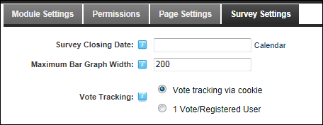
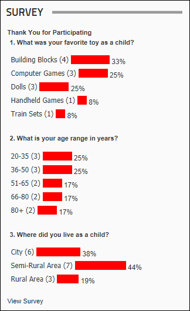
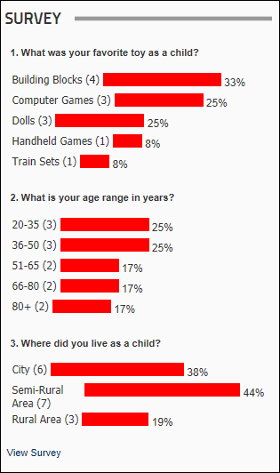

How to set the maximum bar graph width of survey results displayed in the Survey module. For example, if you set the width to 200 pixels then the maximum width of the graph bar will be 200 pixels for a 100% response. The default width of the survey bar graph is 100% of the module width.


Maximum Bar Graph Width set to 200 pixels

Maximum Bar Graph Width not set